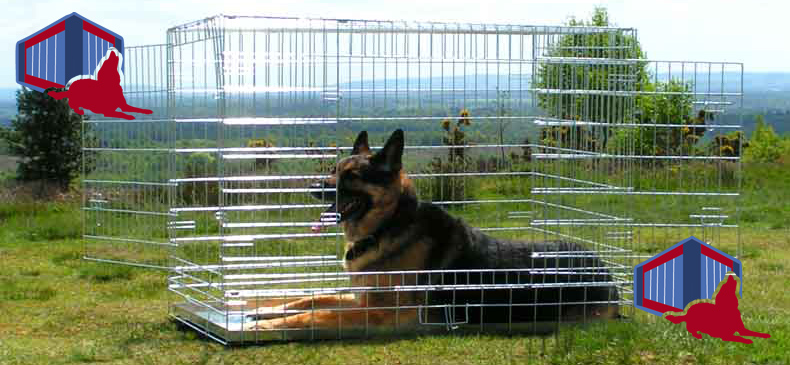

Dog Crates Puppy Cages
So you are looking for a dog crate and you want the highest quality you can find for the lowest possible price. Dog Crates offer you an effective way to house train puppies or keep your Dog safe and secure when in or away from home. We think you will be pleasantly surprised the by our quality and prices. Let us first get rid of some myths about dog crates and make a few comparisons to the other quality dog crates that are available to you. Let's first look at the black epoxy coated crates. We do not offer these because they chip so easily and look tatty after only a few uses and lets be honest if you are spending good money then you will want real value for your money and not something that is going look tatty within a short period of time. Now let's look at those plastic bases that some companies put in the crates. Plastic bases often crack, and split and as well as this dogs often chew them so in reality I can see no advantage to a plastic base except for possibly saving the manufacturer a little money on material and labour costs? This is why we say there are more disadvantages to plastic bases.
Focusing on the advantages and of our dog crates and getting value for money.
Let us move onto chrome - they look great at first and then you find they also chip and flake because chrome is just another coating. We found that the flaking chrome if ingested by a dog could make them unwell. In fact you don't really see many chrome ones around these days which I think is a good thing. So what are you left with? Well you are left with what we sell which is galvanised dog crates but we have improved on them over our years of working within the industry. We have increased the gauge of the mesh frame to 9mm so that it is stronger than others. Even if our competitors can stand on their crates (So can we) but please realise that they are not designed for this and ours are perfectly designed for the task they are meant to be designed for which is dog or puppy training and light containment.
Only the Best - And Our Guarantee To Back It Up
We do not offer economy models, the reason why they are less expensive than others is because we are not greedy and profiteering and the result is that we sell more crates. Remember that quality materials and components do cost more. The metal base tray in our dog crates is far more expensive in material cost than a cheap plastic base tray but for obvious reasons we only provide the metal base trays.
- Galvanised for non-rust long lasting dog crate
- Polished finish dog crates
- Anti-tamper locks cages
- Very heavy gauge mesh frame cage
- Metal tray that can't be chewed and wont split, crack or warp
- Assembles in just three moves easy up and down
- Wont chip or flake
- Our dog crates last for years
- Slide out metal galvanised tray easy cleaning of the crate
- Solves behavioural problems like excessive barking, chewing, scratching and nervousness.
- Dog crates are great for transporting in the car.
- Safe and secure slide bolt latches for your dogs safety.
- Wholesale Prices Direct To You
We believe we are worlds ahead in price, quality and overall value. Why would you go anywhere else to buy your dog crate? Let us now astound you with our super-fast delivery service. Although we cannot guarantee it for the price 99% of our customers get their crate the very next day. So if you are getting a new puppy and you want your crate tomorrow, place your order now. I think we have covered every important aspect of your dog crate purchase so just select the right size for your dog and click the buy now button. You will be taken to a secure server where you can enter your credit card details. Your order is processed within the hour when ordering during normal business hours Order must be placed before 12 midday in order to get it processed and sent for next day delivery.
Fast Delivery of Your Dog Crates
One thing we understand is that when you order a dog crate it is often required at short notice. Therefore the delivery service we use is next day. This excludes weekends and bank holidays obviously but if you order your crate during usual business hours we will have it there for you the very next day ready for your dog. Our special delivery is only £8.99 for mainland UK with certain exclusions. (Normal delivery is £6.99 and can take up to 28 days). 99.9% of our customers opt for the next working day service at an additional £2. We do our best to ensure the product gets to you quickly and efficiently whichever you choose.
Our Satisfaction Guarantee.
Who are we? We are a specialist supplier of dog crates for the UK. We only sell dog crates and nothing else. You can feel confident in buying from us as a large amount of our sales are from returning customers who have been happy with their new dog crate. We want you to feel happy in the knowledge that if any of our products are defective we offer a full money back or replacement guarantee. We would like to take this opportunity to thank all our past and future customers for their patronage and welcome all our new customers to a truly great level of service. We want you to tell your friends and colleagues just how delighted you are with our dog crates but we really want you to tell them about the price, quality and fast service that we offer our valued customers.
Buy Now using your debit or credit card. We use a payment gateway called Paypal where you can securely enter your debit or credit card details with peace of mind. You will find the highest levels of security for processing your payment and it is very simple to use.
BUY YOUR DOG CRATES NOW JUST BELOW
Select the right sized dog crate by looking at guide next crates or click here
Only £8.99 Special* Next Day Delivery Service!
You can use your credit or debit card to make your purchase. It is safe and secure. Just click to Buy This Dog Crate Button next to the dog crate you want to complete the short form and your dog crate will be on its way to you as soon as payment has cleared via our next working day delivery service. Order must be received before 12pm to be dispatched on the same day and arrive the following day via the next business day special delivery service.
The cost of the next working day delivery service to mainland UK is £8.99 special service and added to the final price. See delivery information nearer the bottom of this page. Our standard delivery service for dog crates is £6.99 and takes up to 28 days for delivery. The payment must be by cheque or postal order. The next day service is a special next working day service and is offered at the low price of £8.99 It is a non-refundable delivery service. Please ensure you have read and understand our terms and conditions before making any purchase on this web site - Click here to read. By making a purchase you are agreeing to our terms and conditions. Please note that we are unable to supply dog cages overseas at this time.